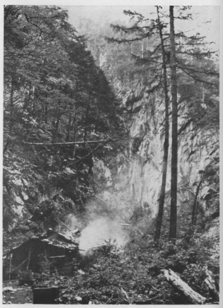

| 笛吹川の上流（東沢と西沢） | |
| 木暮 理太郎 | |
| (2013) | |
笛吹川の上流（東沢と西沢）
木暮理太郎
笛吹川は秩父街道最奥の部落である広瀬附近から上流になると子酉
川と呼ばれている。広瀬から稍
や爪先上りの赤土道を、七、八町も行くと、原中に一本の大きな水楢
か何かの闊葉樹が生えている側
で路が二つに岐れる。右は雁坂
峠へ出るもので、今は峠ノ沢の製板業が盛
になった為に、板を運搬するトロッコの鉄路が通じている。左に沿うて下り気味に辿って行くと雁坂峠から発する峠ノ沢の下流（下股）を渡って、河成段丘であるらしいバラ平なる原を通り抜け、山の裾を横に搦
みながら少し上り始めると闊葉樹林が繁り出して来る。深い深い子酉川の上流東沢西沢の大森林は、茲
に漸く其
端緒を開いて、昼も薄暗い青葉の奥から、怪奇と雄大とを極めた子酉川の水が声を揚げて落ち来るのを左手の脚の下に瞰
むようになる。此処
から眺めた鶏冠
山は、半腹以下は樹林に埋められ、胸から上は岩骨を曝露して見るから凄い光景を呈している。間もなく水のあるナレイ沢を瀑の上で横切ると路が二つに岐れる。左を取って下ると子酉川の河原に出る。粗末な小屋が川に面して建てられているが、路は茲に尽きている。之
は岩魚釣の小屋であるらしい。小屋から其儘
四、五町許
り河身を遡っても、水さえ深くない時ならば楽に西沢の合流点に達することが出来る。
此処で奥千丈山塊から東北に派出された所謂
芦毛山脈の突端と、木賊
山の東峰から南に派出された尾根の突端とが、まるで袋の口を括ったように南北から迫り合って、危く子酉川の上流を堰き止めている。そして国師
岳から東北に延びた甲信国境の山稜からも狭い急な尾根が正東に派出されて、子酉川の上流を南北の二大支流に分つのである。此
尾根は石塔尾根と称するもので、南は即ち西沢北は即ち東沢である。此処を二股と称する。
前に記した路を左に下らずして右に山の鼻を登ると、暫くして急に一つの谷の底へ下り立つようになる。絶壁であるから横木を大五寸釘や針金で止めた荒木の梯子が架けてある。此沢は破風
山の西から発源するヌク沢である。水量は極めて少ないが谷の幅は三間位はあろう。二十間ばかり下で殆んど瀑布をなし子酉川に落ち込んでいるから、水でも増せば徒渉
は極めて危険である。谷に下りた処から二、三間上手に向って斜に河原を横切ると向う岸に登る路があるのだが、附近一帯にザラザラした崩崖をなしている為に、注意して探さないと上り口が分り憎
い。岸に上って又
山の鼻について笹や木立の中を分けて行くと、路は河身に下ってしまう。此処は最早
東沢の領で、西沢の合流点より二町位上に当っているらしい。
対岸の急斜面の下に少許
の平地があって、林莽の茂生したのが目に入る。其処
を目懸けて川を右岸に渡ると、丁度其茂みの中央と思うあたりに蹈まれた路の跡がある。之が石塔尾根に登って行く路であって、登り囗は夫
とも分らないように倒木が横たわったり、木苺
が茂ったりしているが、少し上ると闊葉樹の大森林の中に判然と路の形がつけられている。何処までも辿って行けば国師岳に登れるが、国境山脈と連絡するあたりは岩の瘦尾根で、余り楽ではないそうである。
石塔尾根に登る路と別れて、鶏冠山の東を流れる鶏冠谷の合流点までは、路というものはなく、三、四回徒渉しながら河身を遡るのであるが、平水ならば更に危険の恐
はない。合流点から二町も遡ると絶壁に限られた深潭が現れるのを手始めに、幾多の瀑や淵や急湍が連続して、河床に沿うて遡ることは全く不可能となってしまう。
東沢の渓谷の秘密を闡
く路は鶏冠谷の右岸に始まる。蹈みならした水際の岩の上を二、三間上ると判然した路が左に折れて、山の鼻の上に出る、其儘四、五町も登って休み場と言った風の処へ来ると路が二つに岐れる。右の方を谷に沿うて登って行けば木賊山の東峰に達する。自分は曾て「秩父の奥山」を書いた時、木賊山の条で御料局の切明けが鶏冠谷とヌク沢とを分つ尾根の上を子酉川まで通っているように書いたが、其後注意して探しても終
に登り囗を発見することが出来なかった。然
し確
に道はあるそうである。又途中で遭った岩魚釣の言に拠
ると、鶏冠谷の右岸の道を登って行けば前記の如く木賊山に登れるそうであるから、尾根の道は或は途中から鶏冠谷に沿うて下るようになるのかも知れぬ。
も一つの左の方の路は鶏冠山の裾を廻って、約百二、三十米の脚下に東沢の険流を下瞰しつつ、孰
れかといえば稍や下り気味に行くのであるが、ちょいとした難所には針金などが渡してあるから少しも危険ではない。唯
だ一個所鬚摩
と称する難所があったのであるが、今は其処の上が崩れ落ちて、幅三、四間高さ十数丈の直立の岩壁を露出して通行不能となった為に、一度谷に下りて河を向う岸に渡り、再び此方の岸に戻って路のある所まで登らなければならなくなった。五万分一金峰
山図幅に東沢と記入してある其東
の宇の北に岩壁の符号のあるのが夫である。此処から二十分で道は開けた河原に出て全く其跡を絶ってしまう。自分等は初めて東沢を遡行した時、鶏冠谷の合流点から二町許進んで河身の通行が不可能になった際、鶏冠山の側は非常な絶壁であろうと想像して、南側を横に搦んで大
に困難して辛くも前記の開けた河原へ下ったのであったが、其時は六時間あまりを要した。それが道を辿れば二時間で来られる。地図の米線が東
の字の一分許西で一点の余白を存しているのは、この稍や開けた河原を表記したものと想像されぬでもない。自分は仮りに此処を広河原と命名して置く。
東沢の最も険悪なる部分は、鶏冠谷から此河原に至る迄の約二十町の間で尽きている。夫から上流は両岸の絶壁低きは四、五丈高きは十数丈、殊に鶏冠山の側には百丈もあろうと思われる高さに屹立している所もある。従って両岸から落ち込む谷は、皆吊懸
け谷となって、五丈十丈の瀑は至る所に見られる。斯うなれば横尾根から東沢へ下ることも、東沢から横尾根へ上ることも絶対に不可能であって、此処まで来た以上は何処までも沢を遡って甲信の国境山脈に登るか、元の路を引返すより外には、人界に出られる途
はない。然
し峡谷の美しさは此困難を償いて余りありというてよい。
広河原から蛇行曲折、幾回か右に左に徒渉して河床を遡ること三十分で、左手に細長い段丘状の平が現れる。其処に粗末ながらも充分に雨を凌ぐことが出来る頑丈な小屋がある。この小屋は特にこの附近に限って多く生育していた檜を伐り出す際に建てられたもので、鶏冠山下の路も畢竟
其檜材を搬出する為に造られたのであるそうな。小屋の周りには長さ六尺位の檜の厚板が、岩壁に建て懸けてあったり、其処らに抛り出されたりしているから、一見して小屋の所在を知ることが出来る。朝の五時半に塩山停車場を出発すれば、十時半広瀬、午後一時半鶏冠谷、三時半広河原、四時には楽に此小屋に達せられる。小屋から三、四十間ばかり上手の前面に皺襞の錯綜した十余丈の懸崖が左岸に屹立している。之も小屋の位置を知る好目標であろう。懸崖の面には黄色のカビが生えている、それで麴岩と呼ばれていることを後に知った。

Ⅸ●雨の麴岩小屋（東沢）
小屋から前と同じ様にして河床を辿ること約一時間の後に河が二分する。どちらが本流であるか判断に苦しむが、恐らく右の方が本流ではあるまいか、これは釜沢と呼ばれている。自分等は此沢を遡って甲武信岳に登ろうと企てたのであるが、合流点から一町と行かない中
に四、五丈の瀑があって、三方を岩壁に囲まれ、下は深い淵を成しているので、側へも寄り付くことが出来なかった。小高い処へ登って上流を見渡すと直ぐ其上にも同じ位の滝があるらしく、泡立つ水が白く木の間に光っているのが覗かれた。余程険悪な谷であるらしい。之を探検しようとするには、当時準備が少し手薄だったので、足を蹈み入れる気になれなかった。
左の谷を遡って少し行くと又流れが二分する。右は信州沢と呼ばれている。此沢に沿うて信州へ越えられるから岩魚釣や猟師等が其名で呼ぶようになったのであろう。左は無名の沢だと聞いた。自分等は便宜の為に沢の源である尾根の名を冠して、之を石塔沢と呼ぶことにした。此沢に就ては何等の知る所がない。
信州沢は一連の大花崗岩から成る傾斜の急な河床を谷水が浅く深く穿鑿
して、滝となり瀬となり淵となって楽しげに落ちて来る姿が如何にも美しい。人は魚の如く其水の中を登って行くのであるが、清冷な水は岩面に些
の汚泥をも留
めていないので、何処を蹈んでも更に滑る憂がない。約一時間半も登ると右から一つの沢が来る。此附近には落葉松が多い。更に三十分も登ると今度は左から沢が落ち合っている。五月中旬であると此辺からそろそろ雪が見られる。又三十分も登ると古生層らしい岩崖が一丈二、三尺の瀑を懸けている。此瀑を通過してから左の尾根に取り付いて、石楠
を押し分けながら三十分も登れば国境山脈の切明に出られる。大略三時間の登りと見れば大差はない。
国境山脈から梓山へ出るには、梓川の谷を指して木立の中を好い加減に下って行けば、二十分かそこらで梓川の岸に出る。其処には側師
の通行する立派な路がある。自分等は国境山脈を三時半に出発して六時に梓山へ着いた。其時は可成
急いだのであるが、三時間あれば不足はあるまい。
釜沢と信州沢との間の尾根にも路がある。登り口は少し分り憎いが、若
し発見出来なかったならば、釜沢の瀑の手前から危くない崖を攀じ登って、左へ振れて行けば必ず路へ出られる。二時間で頂上の一角、更に二十五分の後には最高点二千二米の絶頂、夫より下って又登り、小隆起を三つ四つ上下して、左手に国境山脈が近く見える頃から左に山腹を搦んで谷らしい窪に出で、真直ぐに一町も登ると国境山脈の鞍部、丁度東股ノ頭（二千二百七十一米六の三角点ある峰）を東北に向って下り切った処に達する。更に其道を信州側に下って行けば、梓川に沿うた路と合して梓山に行かれる。落葉松窪というのは此処であろうと思われる。
西沢に関しては故荻野音松君の「甲州国司岳行」（『山岳』二年二号所載）と題する文中に次のような記事がある。
此の京ノ沢の下流里余にして七ツ釜と称する所あり、ネトリ川淵となり滝となるもの七個、附近温泉の湧出するものあり、不動岩と云ふものありて、頗る奇観なりと云ふ（中略）。而して又芹沢より所謂「アシゲ」山脈の東部を超え、難道数里にして、七ツ釜に至る事を得べく、七ツ釜不動岩は、畢竟芹沢不動の奥ノ院とも云ふべきものなりと云ふ。但し七ツ釜より此の京ノ沢小屋迄は、殆ど道なきものゝ如く、ネトリ川に沿うて来り得るや、否や、大岳山神社の神職は来り得と云ひしも、余の導者は到底難しと云へり。
自分等が石塔尾根を登る途中で遇
った岩魚釣りも、西沢は東沢よりも悪い沢で到底遡行は出来ないと話した。岩魚釣りの如きも石塔尾根を登って、所要の場所へ下りて魚を釣り、再び尾根を登って前進するという風にしているらしい。果して何
の位まで悪い沢であるか、近い内
に探って見たいと思っている。
此東沢伝いに梓山へ出る旅行は、塩山を出発点としても全二日を要するに過ぎない道程であるが、少くとも四、五時間は河床を辿らなければならない為に、出水の恐ある時期には、能 く天候を見定めてから決行しないと、文字通り進退谷 るの危険に遭遇しないとも限らぬ。五月から六月初旬若しくは十月中旬ならば、仮令 雨天が続いても急激に河の水を増すような事は先ず稀であるから、最も適当した時期であろう。五月の石楠や新緑、十月の黄紅葉などが、この豪壮なる峡谷に更に美しい色彩を添える時に当って、此処を旅行せられたならば、必ずや諸君の期待に背かないであろうと信じている。
（大正五、一〇『山岳』）
底本：「山の憶い出 上」平凡社ライブラリー、平凡社
１９９９（平成11
）年6
月15
日初版第1
刷
底本の親本：「山の憶ひ出 上巻」龍星閣
１９４１（昭和16
）年再刷
初出：「山岳 第11
年第1
号」
１９１６（大正5
）年10
月
※写真は底本の親本からとりました。
入力：栗原晶子
校正：雪森
２０１３年5
月6
日作成
２０１３年7
月23
日修正
青空文庫作成ファイル：
このファイルは、インターネットの図書館、青空文庫（http://www.aozora.gr.jp/）で作られました。入力、校正、制作にあたったのは、ボランティアの皆さんです。